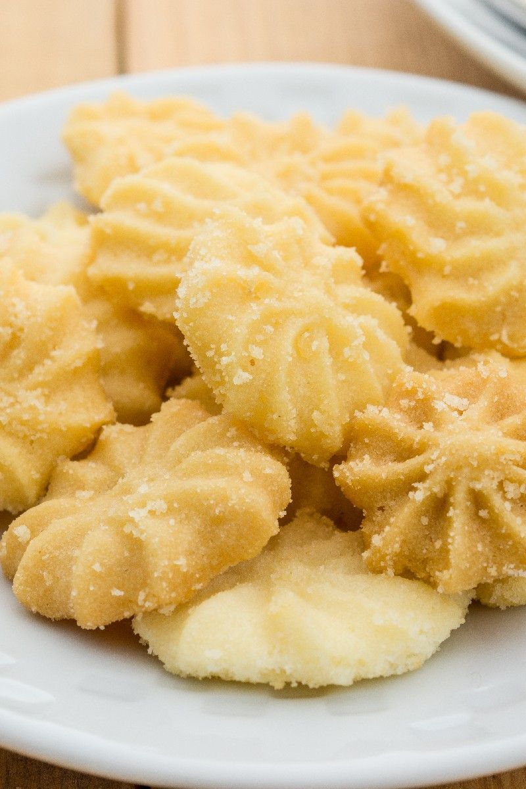

Butter Snow Flakes
This mouth-watering spritz cookie recipe is courtesy of Linda at allrecipes.com. Yields 24 servings.

Ingredients
- 1 1/2 cup all-purpose flour
- 1/6 tsp salt
- 1/6 tsp ground cinnamon
- 2/3 cup butter
- 3 oz package cream cheese, softened
- 2/3 cup white sugar
- 1 egg yolk
- 1 tsp vanilla extract
- 1 tsp orange zest
Steps
- Preheat oven to 350 degrees F (175 degrees C). Sift together the flour, salt, and cinnamon; set aside.
- In a medium bowl, cream together butter and cream cheese. Add sugar and egg yolk; beat until light and fluffy. Stir in the vanilla and orange zest. Gradually blend in the dry ingredients. Fill a cookie press or pastry bag with dough, and form cookies on an ungreased cookie sheet.
- Bake for 12 to 15 minutes in the preheated oven, or until the cookies are golden brown on the peaks and on the bottoms. Remove from cookie sheets at once to cool on wire racks.